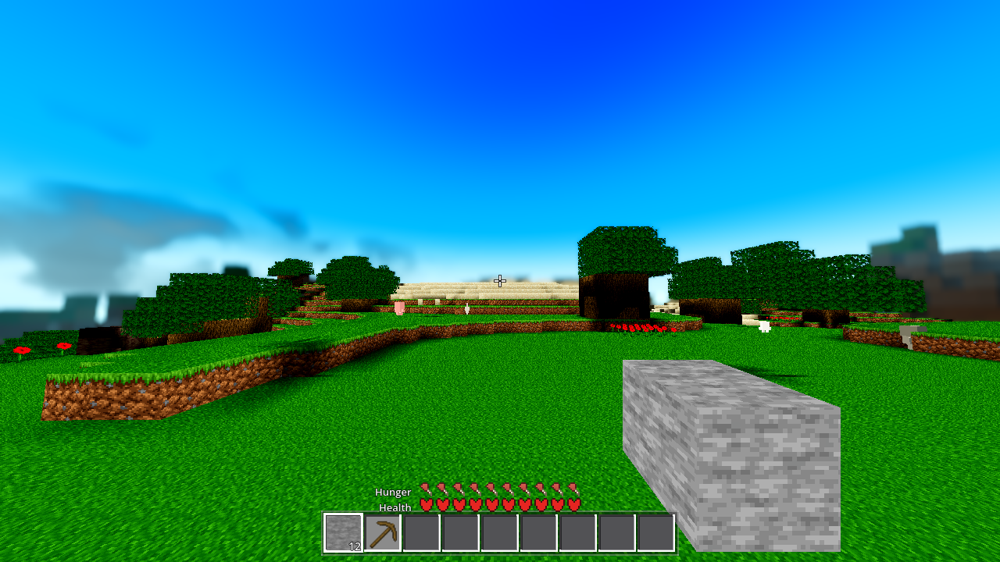
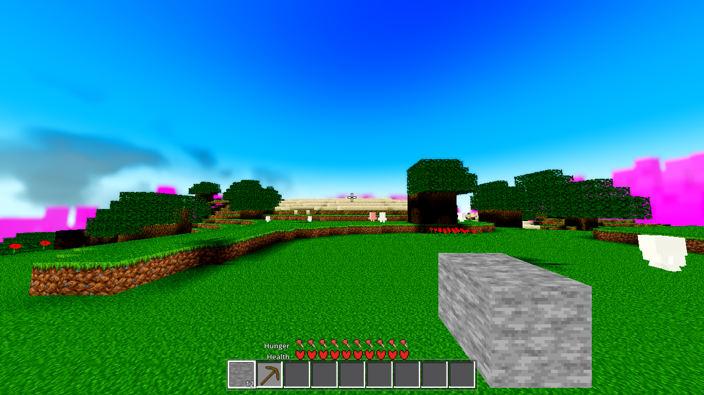
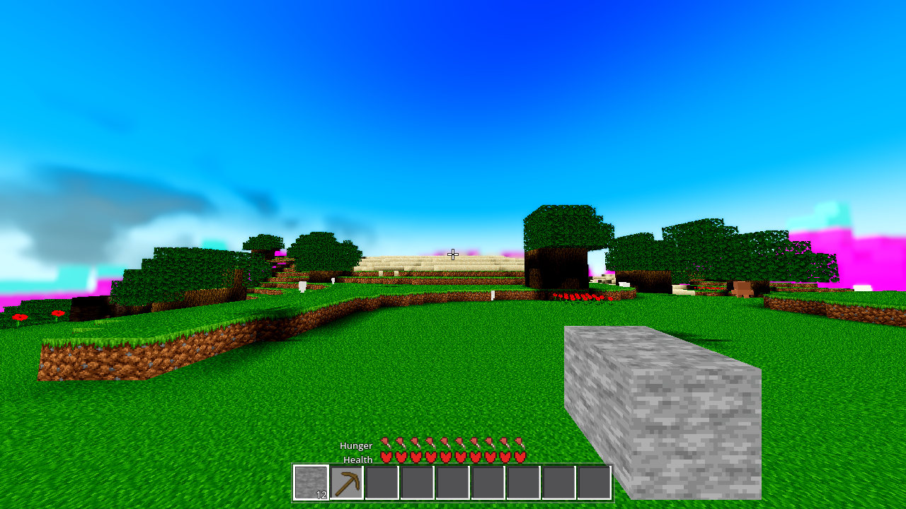
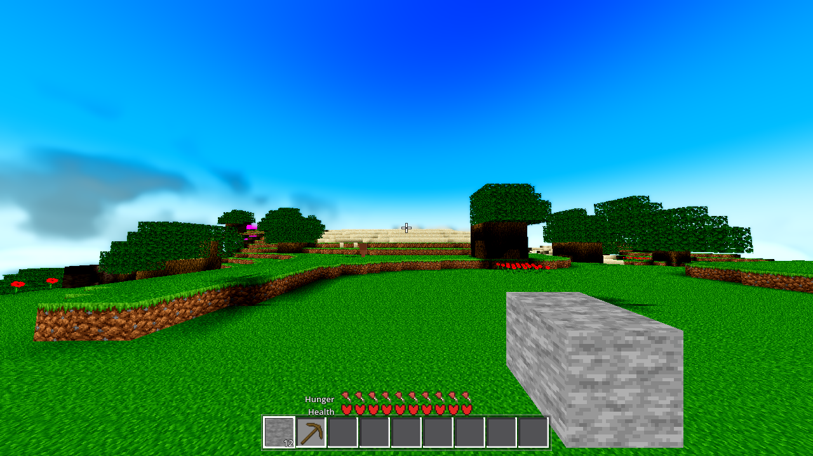
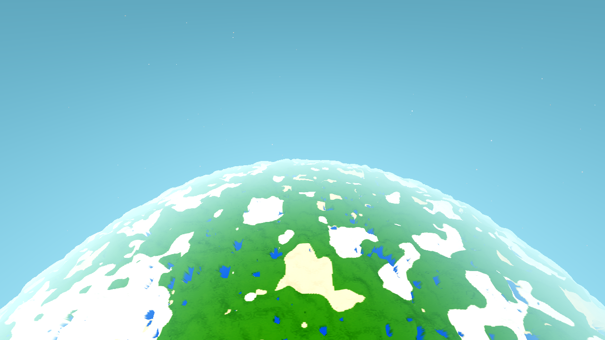
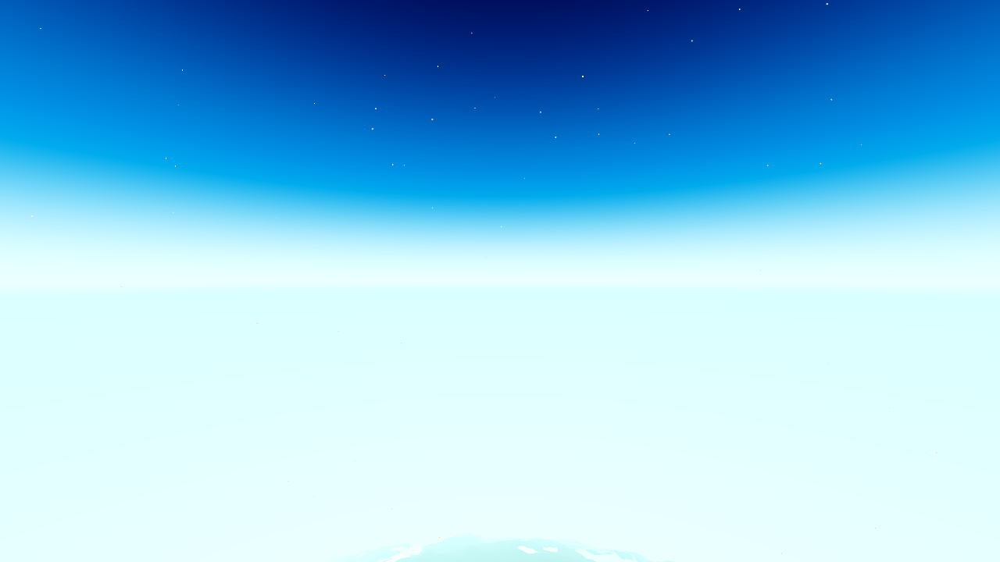
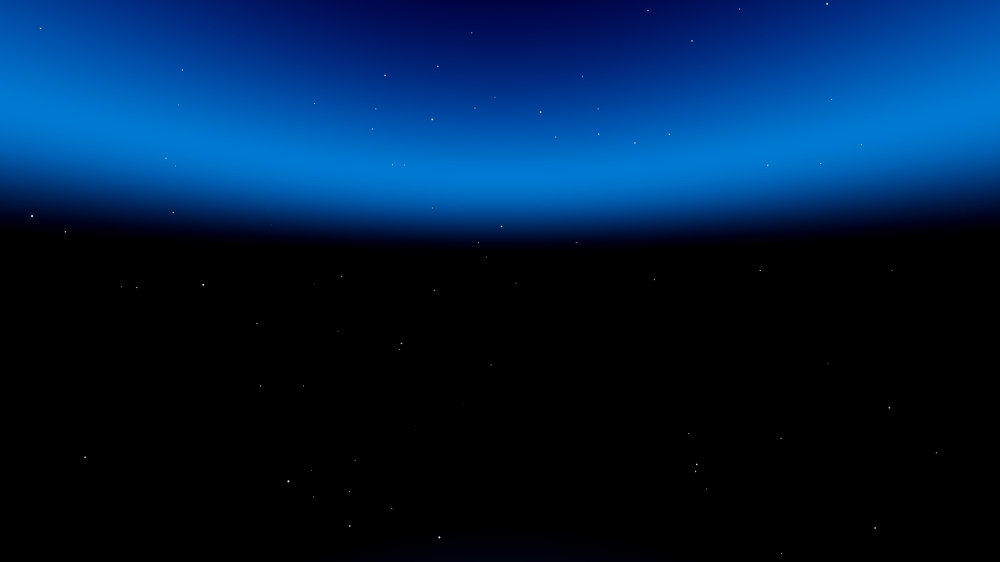
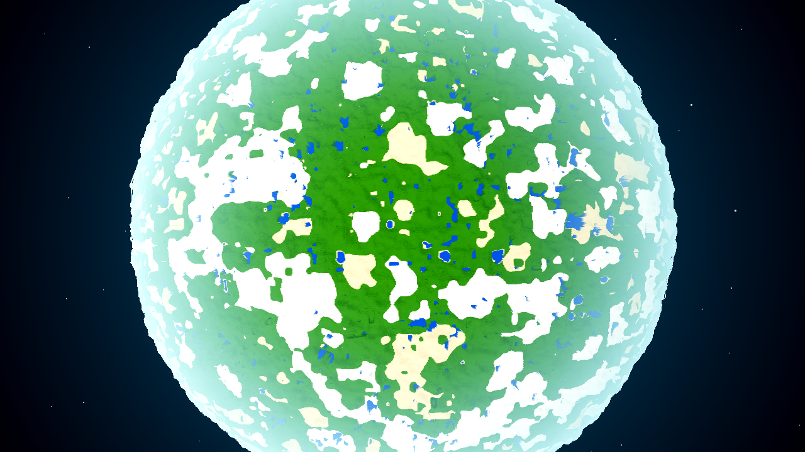

lod_avg far LOD tier
(the med/low average-colour placeholder), specifically its a=0 (unlit/side) faces,
which are the AC-0443 “R24 horizon dark patch.” It is a far-LOD / tier-seam artifact,
not a symptom of the five accumulated sky fixes. Those five fixes are correct and keep
holding; none of them touches the far tier’s face shading, which is where the band actually comes from.
structural · far-LOD one-off · sky
The band is a horizontal strip of the distant placeholder terrain that curves up into the
view above the local horizon. At the grazing angle the camera sees the vertical sides of the
far terrain boxes — the a=0 faces (the heightmap “sky” channel is 0 at/below the terrain top,
i.e. unlit). Those faces render at the cave-floor brightness
lit = 0.2 + u_amb·day.r (u_amb = AMB_SKY_L = 0.35, the AC-0443 lift) multiplied by
day.rgb (the sky display colour — a teal tint) and a ±6% jitter, so they read as a
dark teal band far darker than the shaded flank of the same ridge in the near (chunk_lit) tier.
That brightness gap across the tier boundary is the AC-0443 “R24 horizon dark patch,” which
AC-0443 lifted partially (u_amb) but never fully closed.
It is fog-gated: the far tier is a distance placeholder built and rendered only while the engine environment fog is on (it fills the distance out to the fog wall, u_fog_far = 332 m). With fog off the band region is empty sky.
The sky model predicts a bright colour exactly where the band sits, and the band is dark. So the band cannot be the sky pass. The injection probes then name the producing geometry:


lod_avg.gdshader ALBEDO to magenta turns
the entire band magenta. The band is the lod_avg far tier — not the sky, not the
body, not the clouds.

AWECRAFT_NO_FOG=1:
the right-side magenta band is gone (empty sky, one tiny speck). The far tier — and hence the
band — is only present when env fog is on.The band is not the sky pass. At the band’s elevation the aero sky shader (live uniforms w=0, ws=0, u_horizon=1, u_no_floor=1, T=0.5) computes a bright gradient (208,240,250) at (1200,342); the band renders (41,62,69). No value of the space weights w/ws makes the sky pass dark there, and the aero-off path (sky_off, default colours) also renders bright. The band is opaque terrain drawn in the sky region.
Byte-measured A/B exclusion chain (each re-rendered at the same pinned aim, same world seed):
| Candidate | Switch | Band result | Conclusion |
|---|---|---|---|
| Sky pass (aero gradient) | AWECRAFT_AERO=0 | band persists (values shift) | not the sky |
| Clouds / cloud shell | AWECRAFT_CLOUDS=0 | excluded (AC-0443, byte-identical) | not clouds |
| Satellite body (+ atmosphere) | AWECRAFT_SAT_BODY=0 | band pixel byte-identical | not the body |
| Sky limb glow | AWECRAFT_LIMB=0 | band byte-identical | not the limb term |
| Fog colour (bright u_air) | — | fog is bright (208,241,251); band is dark | not a fog colour |
| Far terrain presence | AWECRAFT_RADIUS=4 | right band gone; left persists | right band needs the far tier |
| Far tier a=0 faces | lod_avg → magenta | band → magenta | THIS is the band |
The five sky fixes (AC-0417 world-up→local-zenith keying, AC-0419 black day sky, AC-0422 hard horizon step, AC-0429 five bottom edges, AC-0439 wrong-space decision) are all sky-model fixes. Each was correct; each is orthogonal to the far tier’s a=0 face shading. The structural concern in the ticket — that the sky model has accumulated conditions faster than it has been understood — does not apply to this band, because the band is not the sky. The real accumulation is at the tier seam: the far tier’s unlit faces have always been darker than the near tier’s shaded faces, and the AC-0443 u_amb lift was a partial parity, not a closure.
Verified at the altitude where each shows, with the planet camera (fog + clouds off to isolate the sky model). Live sky uniforms are carried in each frame’s RESULT.
| Fix | Frame (altitude, aim) | What holds | Evidence |
|---|---|---|---|
| AC-0417 | reg-a1200-limb (A=1200, limb) | local-zenith keying: smooth sky above the limb, no face-boundary step, not black | smooth gradient; u_space_sky=1.0 |
| AC-0419 | all frames | day sky not black; planet opaque | bright cyan sky; nadir = opaque green/white/blue disc |
| AC-0422 | reg-a941/1441/2141-hz | continuous horizon, no hard step | centre-left == centre-right, dL=(0,0,0) |
| AC-0429 | reg-a2141-hz + nadir | below-horizon = space, no bottom edge, planet is the boundary | smooth space below the horizon; u_space=1.0 @2141 |
| AC-0439 | reg-a941-hz (inside A) | below-horizon = AIR (bright), not black | (205,250,250); u_space=0.335 |




Do not consolidate the sky model for this band — there is no sky defect to consolidate.
The honest answer: the band is a far-LOD / tier-seam artifact (the a=0 faces of the
lod_avg placeholder), pre-existing and cloud-independent, and it is the AC-0443 “R24
horizon dark patch.” The fix belongs to a far-LOD ticket, not this sky ticket, and should not
be a suppression patch. Two legitimate shapes:
Either way: the five sky fixes stay as they are; the sky model is not the accumulated-conditions liability the ticket fears, for this feature.
| Gate | Command | Result |
|---|---|---|
| SMOKE battery | AWECRAFT_BATTERY=player;interact;light;fluids;genhash --headless | rc=0 0 SCRIPT/SHADER ERROR, all 5 arms ok, ok:true |
| genhash 25/25 | AWECRAFT_LOGIC=genhash --headless | 25/25 identical to HEAVY-r22 (2026-10-17), AC-0441, AC-0439-r2 |
| shaderforce | AWECRAFT_LOGIC=shaderforce (xvfb vulkan) | rc=0 ok:true, 12/12 shaders verdict=ok, 0 real SHADER/SCRIPT ERROR |
| G0 (census + rc) | tasks/scripts/gate_census.py <8 gate logs> | census ok, exit 0 0 SCRIPT/SHADER ERROR, every rc=0 |
genhash note. The 25/25 is byte-identical to the current baselines (HEAVY-r22, AC-0441,
AC-0439-r2). The AC-0367 reference the task carried is stale: the genhash
legitimately moved between AC-0367 (2026-09-27) and AC-0439 as other world/light tickets landed. This
task’s tree is clean (git diff --stat empty on the world files) and its genhash matches the
immediately-prior ticket’s baseline — no drift was introduced here. Treat the genhash baseline as a
moving target re-anchored to the last ticket that touched world/*.
scenes/main.gd, autoload/game.gd,
entities/drop.gd, autoload/debug.gd; and tasks/AC-0067,
AC-0384, AC-0425.git diff --stat is empty on all three; both .gd files parse with 0 Parse Error;
genhash re-verified clean.Node.find_children() returns empty for every pattern/type (even “*” / “”) on a node
with ~1468 children on this build — hand-walk get_children() recursively.ArrayMesh.aabb is read-only; ArrayMesh has no get_surface_material
(guard with has_method); Basis has no .columns (use
cb * Vector3.UP); is_ray_intersect is unreliable on degenerate-aabb and the
satellite body mesh — treat a manual raycast as corroborating and the A/B isolations as ground truth._physics_process runs ~6 physics steps per engine frame
(max-physics-steps catch-up): a drain counted in physics_frame awaits is only ~500 engine
frames. There is no freeze and no node replacement — a process-phase probe simply never reached its next
print before the run ended.Environment.BG_SKY with a custom sky_material; with aero off the
shader runs its defaults (u_sky_alt=0 → the sky_off world-Y path), so an aero-off A/B still
renders a (different) sky, not a flat background.